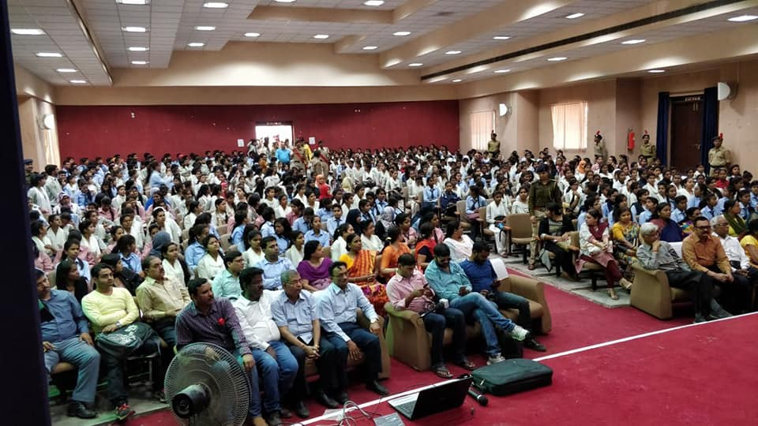

PRINCIPAL DESK

It gives me immense pleasure and joy in welcoming our visitors Marwari College, Ranchi. It goes without saying that it is an honor and privilege to be the Principal of the Marwari College, which is considered to be one of the premier educational institutions of the State of Jharkhand.
Presently, Marwari College, Ranchi, as an Autonomous Institution, has got NAAC Accredition for Higher Studies having 'Potential for Excellence' Award given by UGC, is providing Undergraduate and Post-Graduate Regular Courses to the students. It is also providing Under Graduate and Post-Graduate Job Oriented Courses.
ABOUT COLLEGE
Marwari College, Ranchiwas established in the year 1963 by the Marwari Shiksha Trust to facilitate higher education for the young and promising students of society, specially the tribes and downtrodden. This premier college of Jharkhand State came into existence with sincere and incessant efforts of Late Ganga Prasad Budhia. The first President of Marwari College Governing Body was Late Ganga Prasad Budhia. The college started with 30 students of Pre-University classes, 76 students of B.Com. and 64 students of B.A. in evening session in Marwari School situated at Pustak Path, Near Shaheed Chowk, Ranchi with Sri B.N. Chaubey as the first Principal.
©2018 ALL RIGHTS RESERVED Marwari College,Ranchi